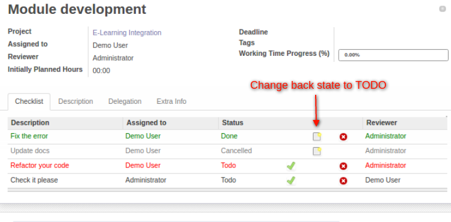

- if a subtask has state "TODO", it's colored in red for user assigned to subtask
- if a subtask has state "DONE", it's colored in green
- if a subtask has state "CANCELLED", it's colored in grey
If you mistakenly switch state to "DONE" or "CANCELLED", you will be able to revert state to TODO by clicking on 
